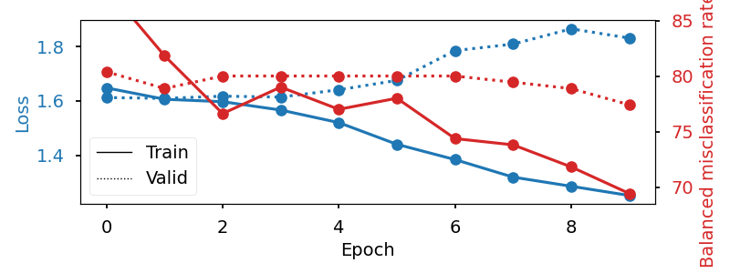

<!DOCTYPE html>
<html class="writer-html5" lang="en" >
<head>
  <meta charset="utf-8" />
  
  <meta name="viewport" content="width=device-width, initial-scale=1.0" />
  
  <title>Sleep staging on the Sleep Physionet dataset &mdash; Braindecode 0.5.1 documentation</title>
  

  
  <link rel="stylesheet" href="../_static/css/theme.css" type="text/css" />
  <link rel="stylesheet" href="../_static/pygments.css" type="text/css" />
  <link rel="stylesheet" href="../_static/pygments.css" type="text/css" />
  <link rel="stylesheet" href="../_static/css/theme.css" type="text/css" />
  <link rel="stylesheet" href="../_static/gallery.css" type="text/css" />
  <link rel="stylesheet" href="../_static/gallery-binder.css" type="text/css" />
  <link rel="stylesheet" href="../_static/gallery-dataframe.css" type="text/css" />
  <link rel="stylesheet" href="../_static/gallery-rendered-html.css" type="text/css" />

  
  

  
  

  

  
  <!--[if lt IE 9]>
    <script src="../_static/js/html5shiv.min.js"></script>
  <![endif]-->
  
    
      <script type="text/javascript" id="documentation_options" data-url_root="../" src="../_static/documentation_options.js"></script>
        <script data-url_root="../" id="documentation_options" src="../_static/documentation_options.js"></script>
        <script src="../_static/jquery.js"></script>
        <script src="../_static/underscore.js"></script>
        <script src="../_static/doctools.js"></script>
    
    <script type="text/javascript" src="../_static/js/theme.js"></script>

    
    <link rel="index" title="Index" href="../genindex.html" />
    <link rel="search" title="Search" href="../search.html" />
    <link rel="next" title="Process a big data EEG resource (TUH EEG Corpus)" href="tuh_eeg_corpus.html" />
    <link rel="prev" title="Regression example on fake data" href="plot_regression.html" /> 
</head>

<body class="wy-body-for-nav">

   
  <div class="wy-grid-for-nav">
    
    <nav data-toggle="wy-nav-shift" class="wy-nav-side">
      <div class="wy-side-scroll">
        <div class="wy-side-nav-search" >
          

          
            <a href="../index.html" class="icon icon-home"> Braindecode
          

          
          </a>

          
            
            
              <div class="version">
                0.5.1
              </div>
            
          

          
<div role="search">
  <form id="rtd-search-form" class="wy-form" action="../search.html" method="get">
    <input type="text" name="q" placeholder="Search docs" />
    <input type="hidden" name="check_keywords" value="yes" />
    <input type="hidden" name="area" value="default" />
  </form>
</div>

          
        </div>

        
        <div class="wy-menu wy-menu-vertical" data-spy="affix" role="navigation" aria-label="main navigation">
          
            
            
              
            
            
              <ul>
<li class="toctree-l1"><a class="reference internal" href="plot_bcic_iv_2a_moabb_trial.html"> Basic trialwise decoding</a></li>
<li class="toctree-l1"><a class="reference internal" href="plot_bcic_iv_2a_moabb_cropped.html"> More data-efficient &quot;cropped decoding&quot;</a></li>
<li class="toctree-l1"><a class="reference internal" href="plot_mne_dataset_example.html"> Your own datasets through MNE</a></li>
<li class="toctree-l1"><a class="reference internal" href="plot_custom_dataset_example.html"> Your own datasets through Numpy</a></li>
</ul>
<ul class="current">
<li class="toctree-l1 current"><a class="reference internal" href="index.html">Braindecode examples</a><ul class="current">
<li class="toctree-l2"><a class="reference internal" href="plot_split_dataset.html">Split Dataset Example</a></li>
<li class="toctree-l2"><a class="reference internal" href="plot_custom_dataset_example.html">Custom Dataset Example</a></li>
<li class="toctree-l2"><a class="reference internal" href="plot_load_save_datasets.html">Load and save dataset example</a></li>
<li class="toctree-l2"><a class="reference internal" href="plot_mne_dataset_example.html">MNE Dataset Example</a></li>
<li class="toctree-l2"><a class="reference internal" href="plot_dataset_example.html">MOABB Dataset Example</a></li>
<li class="toctree-l2"><a class="reference internal" href="plot_regression.html">Regression example on fake data</a></li>
<li class="toctree-l2 current"><a class="current reference internal" href="#">Sleep staging on the Sleep Physionet dataset</a><ul>
<li class="toctree-l3"><a class="reference internal" href="#references">References</a></li>
<li class="toctree-l3"><a class="reference internal" href="#loading-and-preprocessing-the-dataset">Loading and preprocessing the dataset</a><ul>
<li class="toctree-l4"><a class="reference internal" href="#loading">Loading</a></li>
<li class="toctree-l4"><a class="reference internal" href="#preprocessing">Preprocessing</a></li>
<li class="toctree-l4"><a class="reference internal" href="#extract-windows">Extract windows</a></li>
<li class="toctree-l4"><a class="reference internal" href="#window-preprocessing">Window preprocessing</a></li>
<li class="toctree-l4"><a class="reference internal" href="#split-dataset-into-train-and-valid">Split dataset into train and valid</a></li>
</ul>
</li>
<li class="toctree-l3"><a class="reference internal" href="#create-model">Create model</a></li>
<li class="toctree-l3"><a class="reference internal" href="#training">Training</a></li>
<li class="toctree-l3"><a class="reference internal" href="#plot-results">Plot results</a></li>
</ul>
</li>
<li class="toctree-l2"><a class="reference internal" href="plot_bcic_iv_2a_moabb_trial.html">Trialwise Decoding on BCIC IV 2a Dataset</a></li>
<li class="toctree-l2"><a class="reference internal" href="plot_bcic_iv_2a_moabb_cropped.html">Cropped Decoding on BCIC IV 2a Dataset</a></li>
<li class="toctree-l2"><a class="reference internal" href="tuh_eeg_corpus.html">Process a big data EEG resource (TUH EEG Corpus)</a></li>
<li class="toctree-l2"><a class="reference internal" href="benchmark_lazy_eager_loading.html">Benchmarking eager and lazy loading</a></li>
<li class="toctree-l2"><a class="reference internal" href="plot_relative_positioning.html">Self-supervised learning on EEG with relative positioning</a></li>
</ul>
</li>
</ul>
<ul>
<li class="toctree-l1"><a class="reference internal" href="../api.html">API Reference</a></li>
</ul>
<ul>
<li class="toctree-l1"><a class="reference internal" href="../whats_new.html">What’s new</a></li>
</ul>

            
          
        </div>
        
      </div>
    </nav>

    <section data-toggle="wy-nav-shift" class="wy-nav-content-wrap">

      
      <nav class="wy-nav-top" aria-label="top navigation">
        
          <i data-toggle="wy-nav-top" class="fa fa-bars"></i>
          <a href="../index.html">Braindecode</a>
        
      </nav>


      <div class="wy-nav-content">
        
        <div class="rst-content">
        
          


<div role="navigation" aria-label="breadcrumbs navigation">

  <ul class="wy-breadcrumbs">
    
      <li><a href="../index.html" class="icon icon-home"></a> &raquo;</li>
        
          <li><a href="index.html">Braindecode examples</a> &raquo;</li>
        
      <li>Sleep staging on the Sleep Physionet dataset</li>
    
    
      <li class="wy-breadcrumbs-aside">
        
          
            <a href="../_sources/auto_examples/plot_sleep_staging.rst.txt" rel="nofollow"> View page source</a>
          
        
      </li>
    
  </ul>

  
  <hr/>
</div>
          <div role="main" class="document" itemscope="itemscope" itemtype="http://schema.org/Article">
           <div itemprop="articleBody">
            
  <div class="sphx-glr-download-link-note admonition note">
<p class="admonition-title">Note</p>
<p>Click <a class="reference internal" href="#sphx-glr-download-auto-examples-plot-sleep-staging-py"><span class="std std-ref">here</span></a>
to download the full example code</p>
</div>
<div class="sphx-glr-example-title section" id="sleep-staging-on-the-sleep-physionet-dataset">
<span id="sphx-glr-auto-examples-plot-sleep-staging-py"></span><h1>Sleep staging on the Sleep Physionet dataset<a class="headerlink" href="#sleep-staging-on-the-sleep-physionet-dataset" title="Permalink to this headline">¶</a></h1>
<p>This tutorial shows how to train and test a sleep staging neural network with
Braindecode. We follow the approach of <a class="footnote-reference brackets" href="#id4" id="id1">1</a> on the openly accessible Sleep
Physionet dataset <a class="footnote-reference brackets" href="#id4" id="id2">1</a> <a class="footnote-reference brackets" href="#id5" id="id3">2</a>.</p>
<div class="section" id="references">
<h2>References<a class="headerlink" href="#references" title="Permalink to this headline">¶</a></h2>
<dl class="footnote brackets">
<dt class="label" id="id4"><span class="brackets">1</span><span class="fn-backref">(<a href="#id1">1</a>,<a href="#id2">2</a>,<a href="#id7">3</a>,<a href="#id8">4</a>,<a href="#id9">5</a>,<a href="#id10">6</a>)</span></dt>
<dd><p>Chambon, S., Galtier, M., Arnal, P., Wainrib, G. and Gramfort, A.
(2018)A Deep Learning Architecture for Temporal Sleep Stage
Classification Using Multivariate and Multimodal Time Series.
IEEE Trans. on Neural Systems and Rehabilitation Engineering 26:
(758-769)</p>
</dd>
<dt class="label" id="id5"><span class="brackets"><a class="fn-backref" href="#id3">2</a></span></dt>
<dd><p>B Kemp, AH Zwinderman, B Tuk, HAC Kamphuisen, JJL Oberyé. Analysis of
a sleep-dependent neuronal feedback loop: the slow-wave
microcontinuity of the EEG. IEEE-BME 47(9):1185-1194 (2000).</p>
</dd>
<dt class="label" id="id6"><span class="brackets">3</span></dt>
<dd><p>Goldberger AL, Amaral LAN, Glass L, Hausdorff JM, Ivanov PCh,
Mark RG, Mietus JE, Moody GB, Peng C-K, Stanley HE. (2000)
PhysioBank, PhysioToolkit, and PhysioNet: Components of a New
Research Resource for Complex Physiologic Signals.
Circulation 101(23):e215-e220</p>
</dd>
</dl>
<div class="highlight-default notranslate"><div class="highlight"><pre><span></span><span class="c1"># Authors: Hubert Banville &lt;hubert.jbanville@gmail.com&gt;</span>
<span class="c1">#</span>
<span class="c1"># License: BSD (3-clause)</span>
</pre></div>
</div>
</div>
<div class="section" id="loading-and-preprocessing-the-dataset">
<h2>Loading and preprocessing the dataset<a class="headerlink" href="#loading-and-preprocessing-the-dataset" title="Permalink to this headline">¶</a></h2>
<div class="section" id="loading">
<h3>Loading<a class="headerlink" href="#loading" title="Permalink to this headline">¶</a></h3>
<p>First, we load the data using the
<a class="reference internal" href="../generated/braindecode.datasets.SleepPhysionet.html#braindecode.datasets.SleepPhysionet" title="braindecode.datasets.sleep_physionet.SleepPhysionet"><code class="xref py py-class docutils literal notranslate"><span class="pre">braindecode.datasets.sleep_physionet.SleepPhysionet</span></code></a> class. We load
two recordings from two different individuals: we will use the first one to
train our network and the second one to evaluate performance (as in the <a class="reference external" href="https://mne.tools/stable/auto_tutorials/sample-datasets/plot_sleep.html">MNE</a>
sleep staging example).</p>
<div class="admonition note">
<p class="admonition-title">Note</p>
<p>To load your own datasets either via MNE or from
preprocessed X/y numpy arrays, see the <a class="reference external" href="./plot_mne_dataset_example.html">MNE Dataset
Tutorial</a> and the <a class="reference external" href="./plot_custom_dataset_example.html">Numpy Dataset
Tutorial</a>.</p>
</div>
<div class="highlight-default notranslate"><div class="highlight"><pre><span></span><span class="kn">from</span> <span class="nn">braindecode.datasets.sleep_physionet</span> <span class="kn">import</span> <a href="../generated/braindecode.datasets.SleepPhysionet.html#braindecode.datasets.SleepPhysionet" title="braindecode.datasets.SleepPhysionet" class="sphx-glr-backref-module-braindecode-datasets sphx-glr-backref-type-py-class"><span class="n">SleepPhysionet</span></a>

<a href="../generated/braindecode.datasets.SleepPhysionet.html#braindecode.datasets.SleepPhysionet" title="braindecode.datasets.SleepPhysionet" class="sphx-glr-backref-module-braindecode-datasets sphx-glr-backref-type-py-class sphx-glr-backref-instance"><span class="n">dataset</span></a> <span class="o">=</span> <a href="../generated/braindecode.datasets.SleepPhysionet.html#braindecode.datasets.SleepPhysionet" title="braindecode.datasets.SleepPhysionet" class="sphx-glr-backref-module-braindecode-datasets sphx-glr-backref-type-py-class"><span class="n">SleepPhysionet</span></a><span class="p">(</span>
    <span class="n">subject_ids</span><span class="o">=</span><span class="p">[</span><span class="mi">0</span><span class="p">,</span> <span class="mi">1</span><span class="p">],</span> <span class="n">recording_ids</span><span class="o">=</span><span class="p">[</span><span class="mi">1</span><span class="p">],</span> <span class="n">crop_wake_mins</span><span class="o">=</span><span class="mi">30</span><span class="p">)</span>
</pre></div>
</div>
<p class="sphx-glr-script-out">Out:</p>
<div class="sphx-glr-script-out highlight-none notranslate"><div class="highlight"><pre><span></span>Extracting EDF parameters from /home/runner/mne_data/physionet-sleep-data/SC4001E0-PSG.edf...
EDF file detected
Setting channel info structure...
Creating raw.info structure...
Extracting EDF parameters from /home/runner/mne_data/physionet-sleep-data/SC4011E0-PSG.edf...
EDF file detected
Setting channel info structure...
Creating raw.info structure...
</pre></div>
</div>
</div>
<div class="section" id="preprocessing">
<h3>Preprocessing<a class="headerlink" href="#preprocessing" title="Permalink to this headline">¶</a></h3>
<p>Next, we preprocess the raw data. We apply convert the data to microvolts and
apply a lowpass filter. We omit the downsampling step of <a class="footnote-reference brackets" href="#id4" id="id7">1</a> as the Sleep
Physionet data is already sampled at a lower 100 Hz.</p>
<div class="highlight-default notranslate"><div class="highlight"><pre><span></span><span class="kn">from</span> <span class="nn">braindecode.preprocessing.preprocess</span> <span class="kn">import</span> <a href="../generated/braindecode.preprocessing.preprocess.html#braindecode.preprocessing.preprocess" title="braindecode.preprocessing.preprocess" class="sphx-glr-backref-module-braindecode-preprocessing sphx-glr-backref-type-py-function"><span class="n">preprocess</span></a><span class="p">,</span> <a href="../generated/braindecode.preprocessing.Preprocessor.html#braindecode.preprocessing.Preprocessor" title="braindecode.preprocessing.Preprocessor" class="sphx-glr-backref-module-braindecode-preprocessing sphx-glr-backref-type-py-class"><span class="n">Preprocessor</span></a>

<a href="https://docs.python.org/3/library/functions.html#int" title="builtins.int" class="sphx-glr-backref-module-builtins sphx-glr-backref-type-py-class sphx-glr-backref-instance"><span class="n">high_cut_hz</span></a> <span class="o">=</span> <span class="mi">30</span>

<a href="https://docs.python.org/3/library/stdtypes.html#list" title="builtins.list" class="sphx-glr-backref-module-builtins sphx-glr-backref-type-py-class sphx-glr-backref-instance"><span class="n">preprocessors</span></a> <span class="o">=</span> <span class="p">[</span>
    <a href="../generated/braindecode.preprocessing.Preprocessor.html#braindecode.preprocessing.Preprocessor" title="braindecode.preprocessing.Preprocessor" class="sphx-glr-backref-module-braindecode-preprocessing sphx-glr-backref-type-py-class"><span class="n">Preprocessor</span></a><span class="p">(</span><span class="k">lambda</span> <span class="n">x</span><span class="p">:</span> <span class="n">x</span> <span class="o">*</span> <span class="mf">1e6</span><span class="p">),</span>
    <a href="../generated/braindecode.preprocessing.Preprocessor.html#braindecode.preprocessing.Preprocessor" title="braindecode.preprocessing.Preprocessor" class="sphx-glr-backref-module-braindecode-preprocessing sphx-glr-backref-type-py-class"><span class="n">Preprocessor</span></a><span class="p">(</span><span class="s1">&#39;filter&#39;</span><span class="p">,</span> <span class="n">l_freq</span><span class="o">=</span><span class="kc">None</span><span class="p">,</span> <span class="n">h_freq</span><span class="o">=</span><a href="https://docs.python.org/3/library/functions.html#int" title="builtins.int" class="sphx-glr-backref-module-builtins sphx-glr-backref-type-py-class sphx-glr-backref-instance"><span class="n">high_cut_hz</span></a><span class="p">)</span>
<span class="p">]</span>

<span class="c1"># Transform the data</span>
<a href="../generated/braindecode.preprocessing.preprocess.html#braindecode.preprocessing.preprocess" title="braindecode.preprocessing.preprocess" class="sphx-glr-backref-module-braindecode-preprocessing sphx-glr-backref-type-py-function"><span class="n">preprocess</span></a><span class="p">(</span><a href="../generated/braindecode.datasets.SleepPhysionet.html#braindecode.datasets.SleepPhysionet" title="braindecode.datasets.SleepPhysionet" class="sphx-glr-backref-module-braindecode-datasets sphx-glr-backref-type-py-class sphx-glr-backref-instance"><span class="n">dataset</span></a><span class="p">,</span> <a href="https://docs.python.org/3/library/stdtypes.html#list" title="builtins.list" class="sphx-glr-backref-module-builtins sphx-glr-backref-type-py-class sphx-glr-backref-instance"><span class="n">preprocessors</span></a><span class="p">)</span>
</pre></div>
</div>
<p class="sphx-glr-script-out">Out:</p>
<div class="sphx-glr-script-out highlight-none notranslate"><div class="highlight"><pre><span></span>Reading 0 ... 2508000  =      0.000 ... 25080.000 secs...
Filtering raw data in 1 contiguous segment
Setting up low-pass filter at 30 Hz

FIR filter parameters
---------------------
Designing a one-pass, zero-phase, non-causal lowpass filter:
- Windowed time-domain design (firwin) method
- Hamming window with 0.0194 passband ripple and 53 dB stopband attenuation
- Upper passband edge: 30.00 Hz
- Upper transition bandwidth: 7.50 Hz (-6 dB cutoff frequency: 33.75 Hz)
- Filter length: 45 samples (0.450 sec)

Reading 0 ... 3261000  =      0.000 ... 32610.000 secs...
Filtering raw data in 1 contiguous segment
Setting up low-pass filter at 30 Hz

FIR filter parameters
---------------------
Designing a one-pass, zero-phase, non-causal lowpass filter:
- Windowed time-domain design (firwin) method
- Hamming window with 0.0194 passband ripple and 53 dB stopband attenuation
- Upper passband edge: 30.00 Hz
- Upper transition bandwidth: 7.50 Hz (-6 dB cutoff frequency: 33.75 Hz)
- Filter length: 45 samples (0.450 sec)
</pre></div>
</div>
</div>
<div class="section" id="extract-windows">
<h3>Extract windows<a class="headerlink" href="#extract-windows" title="Permalink to this headline">¶</a></h3>
<p>We extract 30-s windows to be used in the classification task.</p>
<div class="highlight-default notranslate"><div class="highlight"><pre><span></span><span class="kn">from</span> <span class="nn">braindecode.preprocessing.windowers</span> <span class="kn">import</span> <a href="../generated/braindecode.preprocessing.create_windows_from_events.html#braindecode.preprocessing.create_windows_from_events" title="braindecode.preprocessing.create_windows_from_events" class="sphx-glr-backref-module-braindecode-preprocessing sphx-glr-backref-type-py-function"><span class="n">create_windows_from_events</span></a>


<a href="https://docs.python.org/3/library/stdtypes.html#dict" title="builtins.dict" class="sphx-glr-backref-module-builtins sphx-glr-backref-type-py-class sphx-glr-backref-instance"><span class="n">mapping</span></a> <span class="o">=</span> <span class="p">{</span>  <span class="c1"># We merge stages 3 and 4 following AASM standards.</span>
    <span class="s1">&#39;Sleep stage W&#39;</span><span class="p">:</span> <span class="mi">0</span><span class="p">,</span>
    <span class="s1">&#39;Sleep stage 1&#39;</span><span class="p">:</span> <span class="mi">1</span><span class="p">,</span>
    <span class="s1">&#39;Sleep stage 2&#39;</span><span class="p">:</span> <span class="mi">2</span><span class="p">,</span>
    <span class="s1">&#39;Sleep stage 3&#39;</span><span class="p">:</span> <span class="mi">3</span><span class="p">,</span>
    <span class="s1">&#39;Sleep stage 4&#39;</span><span class="p">:</span> <span class="mi">3</span><span class="p">,</span>
    <span class="s1">&#39;Sleep stage R&#39;</span><span class="p">:</span> <span class="mi">4</span>
<span class="p">}</span>

<a href="https://docs.python.org/3/library/functions.html#int" title="builtins.int" class="sphx-glr-backref-module-builtins sphx-glr-backref-type-py-class sphx-glr-backref-instance"><span class="n">window_size_s</span></a> <span class="o">=</span> <span class="mi">30</span>
<a href="https://docs.python.org/3/library/functions.html#int" title="builtins.int" class="sphx-glr-backref-module-builtins sphx-glr-backref-type-py-class sphx-glr-backref-instance"><span class="n">sfreq</span></a> <span class="o">=</span> <span class="mi">100</span>
<a href="https://docs.python.org/3/library/functions.html#int" title="builtins.int" class="sphx-glr-backref-module-builtins sphx-glr-backref-type-py-class sphx-glr-backref-instance"><span class="n">window_size_samples</span></a> <span class="o">=</span> <a href="https://docs.python.org/3/library/functions.html#int" title="builtins.int" class="sphx-glr-backref-module-builtins sphx-glr-backref-type-py-class sphx-glr-backref-instance"><span class="n">window_size_s</span></a> <span class="o">*</span> <a href="https://docs.python.org/3/library/functions.html#int" title="builtins.int" class="sphx-glr-backref-module-builtins sphx-glr-backref-type-py-class sphx-glr-backref-instance"><span class="n">sfreq</span></a>

<a href="../generated/braindecode.datasets.BaseConcatDataset.html#braindecode.datasets.BaseConcatDataset" title="braindecode.datasets.BaseConcatDataset" class="sphx-glr-backref-module-braindecode-datasets sphx-glr-backref-type-py-class sphx-glr-backref-instance"><span class="n">windows_dataset</span></a> <span class="o">=</span> <a href="../generated/braindecode.preprocessing.create_windows_from_events.html#braindecode.preprocessing.create_windows_from_events" title="braindecode.preprocessing.create_windows_from_events" class="sphx-glr-backref-module-braindecode-preprocessing sphx-glr-backref-type-py-function"><span class="n">create_windows_from_events</span></a><span class="p">(</span>
    <a href="../generated/braindecode.datasets.SleepPhysionet.html#braindecode.datasets.SleepPhysionet" title="braindecode.datasets.SleepPhysionet" class="sphx-glr-backref-module-braindecode-datasets sphx-glr-backref-type-py-class sphx-glr-backref-instance"><span class="n">dataset</span></a><span class="p">,</span> <span class="n">trial_start_offset_samples</span><span class="o">=</span><span class="mi">0</span><span class="p">,</span> <span class="n">trial_stop_offset_samples</span><span class="o">=</span><span class="mi">0</span><span class="p">,</span>
    <a href="https://docs.python.org/3/library/functions.html#int" title="builtins.int" class="sphx-glr-backref-module-builtins sphx-glr-backref-type-py-class sphx-glr-backref-instance"><span class="n">window_size_samples</span></a><span class="o">=</span><a href="https://docs.python.org/3/library/functions.html#int" title="builtins.int" class="sphx-glr-backref-module-builtins sphx-glr-backref-type-py-class sphx-glr-backref-instance"><span class="n">window_size_samples</span></a><span class="p">,</span>
    <span class="n">window_stride_samples</span><span class="o">=</span><a href="https://docs.python.org/3/library/functions.html#int" title="builtins.int" class="sphx-glr-backref-module-builtins sphx-glr-backref-type-py-class sphx-glr-backref-instance"><span class="n">window_size_samples</span></a><span class="p">,</span> <span class="n">preload</span><span class="o">=</span><span class="kc">True</span><span class="p">,</span> <a href="https://docs.python.org/3/library/stdtypes.html#dict" title="builtins.dict" class="sphx-glr-backref-module-builtins sphx-glr-backref-type-py-class sphx-glr-backref-instance"><span class="n">mapping</span></a><span class="o">=</span><a href="https://docs.python.org/3/library/stdtypes.html#dict" title="builtins.dict" class="sphx-glr-backref-module-builtins sphx-glr-backref-type-py-class sphx-glr-backref-instance"><span class="n">mapping</span></a><span class="p">)</span>
</pre></div>
</div>
<p class="sphx-glr-script-out">Out:</p>
<div class="sphx-glr-script-out highlight-none notranslate"><div class="highlight"><pre><span></span>Used Annotations descriptions: [&#39;Sleep stage 1&#39;, &#39;Sleep stage 2&#39;, &#39;Sleep stage 3&#39;, &#39;Sleep stage 4&#39;, &#39;Sleep stage R&#39;, &#39;Sleep stage W&#39;]
Adding metadata with 4 columns
Replacing existing metadata with 4 columns
837 matching events found
No baseline correction applied
0 projection items activated
Loading data for 837 events and 3000 original time points ...
0 bad epochs dropped
Used Annotations descriptions: [&#39;Sleep stage 1&#39;, &#39;Sleep stage 2&#39;, &#39;Sleep stage 3&#39;, &#39;Sleep stage 4&#39;, &#39;Sleep stage R&#39;, &#39;Sleep stage W&#39;]
Adding metadata with 4 columns
Replacing existing metadata with 4 columns
1088 matching events found
No baseline correction applied
0 projection items activated
Loading data for 1088 events and 3000 original time points ...
0 bad epochs dropped
</pre></div>
</div>
</div>
<div class="section" id="window-preprocessing">
<h3>Window preprocessing<a class="headerlink" href="#window-preprocessing" title="Permalink to this headline">¶</a></h3>
<p>We also preprocess the windows by applying channel-wise z-score normalization
in each window.</p>
<div class="highlight-default notranslate"><div class="highlight"><pre><span></span><span class="kn">from</span> <span class="nn">braindecode.preprocessing.preprocess</span> <span class="kn">import</span> <a href="../generated/braindecode.preprocessing.zscore.html#braindecode.preprocessing.zscore" title="braindecode.preprocessing.zscore" class="sphx-glr-backref-module-braindecode-preprocessing sphx-glr-backref-type-py-function"><span class="n">zscore</span></a>

<a href="../generated/braindecode.preprocessing.preprocess.html#braindecode.preprocessing.preprocess" title="braindecode.preprocessing.preprocess" class="sphx-glr-backref-module-braindecode-preprocessing sphx-glr-backref-type-py-function"><span class="n">preprocess</span></a><span class="p">(</span><a href="../generated/braindecode.datasets.BaseConcatDataset.html#braindecode.datasets.BaseConcatDataset" title="braindecode.datasets.BaseConcatDataset" class="sphx-glr-backref-module-braindecode-datasets sphx-glr-backref-type-py-class sphx-glr-backref-instance"><span class="n">windows_dataset</span></a><span class="p">,</span> <span class="p">[</span><a href="../generated/braindecode.preprocessing.Preprocessor.html#braindecode.preprocessing.Preprocessor" title="braindecode.preprocessing.Preprocessor" class="sphx-glr-backref-module-braindecode-preprocessing sphx-glr-backref-type-py-class"><span class="n">Preprocessor</span></a><span class="p">(</span><a href="../generated/braindecode.preprocessing.zscore.html#braindecode.preprocessing.zscore" title="braindecode.preprocessing.zscore" class="sphx-glr-backref-module-braindecode-preprocessing sphx-glr-backref-type-py-function"><span class="n">zscore</span></a><span class="p">)])</span>
</pre></div>
</div>
</div>
<div class="section" id="split-dataset-into-train-and-valid">
<h3>Split dataset into train and valid<a class="headerlink" href="#split-dataset-into-train-and-valid" title="Permalink to this headline">¶</a></h3>
<p>We can easily split the dataset using additional info stored in the
<cite>description</cite> attribute of <a class="reference internal" href="../generated/braindecode.datasets.BaseDataset.html#braindecode.datasets.BaseDataset" title="braindecode.datasets.BaseDataset"><code class="xref py py-class docutils literal notranslate"><span class="pre">braindecode.datasets.BaseDataset</span></code></a>,
in this case using the <code class="docutils literal notranslate"><span class="pre">subject</span></code> column. Here, we split the examples per subject.</p>
<div class="highlight-default notranslate"><div class="highlight"><pre><span></span><a href="https://docs.python.org/3/library/stdtypes.html#dict" title="builtins.dict" class="sphx-glr-backref-module-builtins sphx-glr-backref-type-py-class sphx-glr-backref-instance"><span class="n">splitted</span></a> <span class="o">=</span> <a href="../generated/braindecode.datasets.BaseConcatDataset.html#braindecode.datasets.BaseConcatDataset.split" title="braindecode.datasets.BaseConcatDataset.split" class="sphx-glr-backref-module-braindecode-datasets sphx-glr-backref-type-py-method"><span class="n">windows_dataset</span><span class="o">.</span><span class="n">split</span></a><span class="p">(</span><span class="s1">&#39;subject&#39;</span><span class="p">)</span>
<a href="../generated/braindecode.datasets.BaseConcatDataset.html#braindecode.datasets.BaseConcatDataset" title="braindecode.datasets.BaseConcatDataset" class="sphx-glr-backref-module-braindecode-datasets sphx-glr-backref-type-py-class sphx-glr-backref-instance"><span class="n">train_set</span></a> <span class="o">=</span> <a href="https://docs.python.org/3/library/stdtypes.html#dict" title="builtins.dict" class="sphx-glr-backref-module-builtins sphx-glr-backref-type-py-class sphx-glr-backref-instance"><span class="n">splitted</span></a><span class="p">[</span><span class="s1">&#39;0&#39;</span><span class="p">]</span>
<a href="../generated/braindecode.datasets.BaseConcatDataset.html#braindecode.datasets.BaseConcatDataset" title="braindecode.datasets.BaseConcatDataset" class="sphx-glr-backref-module-braindecode-datasets sphx-glr-backref-type-py-class sphx-glr-backref-instance"><span class="n">valid_set</span></a> <span class="o">=</span> <a href="https://docs.python.org/3/library/stdtypes.html#dict" title="builtins.dict" class="sphx-glr-backref-module-builtins sphx-glr-backref-type-py-class sphx-glr-backref-instance"><span class="n">splitted</span></a><span class="p">[</span><span class="s1">&#39;1&#39;</span><span class="p">]</span>

<span class="c1"># Print number of examples per class</span>
<span class="nb">print</span><span class="p">(</span><a href="https://docs.python.org/3/library/stdtypes.html#list" title="builtins.list" class="sphx-glr-backref-module-builtins sphx-glr-backref-type-py-class sphx-glr-backref-instance"><span class="n">train_set</span><span class="o">.</span><span class="n">datasets</span></a><span class="p">[</span><span class="mi">0</span><span class="p">]</span><span class="o">.</span><span class="n">windows</span><span class="p">)</span>
<span class="nb">print</span><span class="p">(</span><a href="https://docs.python.org/3/library/stdtypes.html#list" title="builtins.list" class="sphx-glr-backref-module-builtins sphx-glr-backref-type-py-class sphx-glr-backref-instance"><span class="n">valid_set</span><span class="o">.</span><span class="n">datasets</span></a><span class="p">[</span><span class="mi">0</span><span class="p">]</span><span class="o">.</span><span class="n">windows</span><span class="p">)</span>
</pre></div>
</div>
<p class="sphx-glr-script-out">Out:</p>
<div class="sphx-glr-script-out highlight-none notranslate"><div class="highlight"><pre><span></span>&lt;Epochs |  837 events (all good), 0 - 29.99 sec, baseline off, ~38.3 MB, data loaded, with metadata,
 &#39;Sleep stage 1&#39;: 58
 &#39;Sleep stage 2&#39;: 250
 &#39;Sleep stage 3&#39;: 220
 &#39;Sleep stage 4&#39;: 220
 &#39;Sleep stage R&#39;: 125
 &#39;Sleep stage W&#39;: 184&gt;
&lt;Epochs |  1088 events (all good), 0 - 29.99 sec, baseline off, ~49.8 MB, data loaded, with metadata,
 &#39;Sleep stage 1&#39;: 109
 &#39;Sleep stage 2&#39;: 562
 &#39;Sleep stage 3&#39;: 105
 &#39;Sleep stage 4&#39;: 105
 &#39;Sleep stage R&#39;: 170
 &#39;Sleep stage W&#39;: 142&gt;
</pre></div>
</div>
</div>
</div>
<div class="section" id="create-model">
<h2>Create model<a class="headerlink" href="#create-model" title="Permalink to this headline">¶</a></h2>
<p>We can now create the deep learning model. In this tutorial, we use the sleep
staging architecture introduced in <a class="footnote-reference brackets" href="#id4" id="id8">1</a>, which is a four-layer convolutional
neural network.</p>
<div class="highlight-default notranslate"><div class="highlight"><pre><span></span><span class="kn">import</span> <span class="nn">torch</span>
<span class="kn">from</span> <span class="nn">braindecode.util</span> <span class="kn">import</span> <a href="../generated/braindecode.util.set_random_seeds.html#braindecode.util.set_random_seeds" title="braindecode.util.set_random_seeds" class="sphx-glr-backref-module-braindecode-util sphx-glr-backref-type-py-function"><span class="n">set_random_seeds</span></a>
<span class="kn">from</span> <span class="nn">braindecode.models</span> <span class="kn">import</span> <a href="../generated/braindecode.models.SleepStagerChambon2018.html#braindecode.models.SleepStagerChambon2018" title="braindecode.models.SleepStagerChambon2018" class="sphx-glr-backref-module-braindecode-models sphx-glr-backref-type-py-class"><span class="n">SleepStagerChambon2018</span></a>

<a href="https://docs.python.org/3/library/functions.html#bool" title="builtins.bool" class="sphx-glr-backref-module-builtins sphx-glr-backref-type-py-class sphx-glr-backref-instance"><span class="n">cuda</span></a> <span class="o">=</span> <span class="n">torch</span><span class="o">.</span><a href="https://docs.python.org/3/library/functions.html#bool" title="builtins.bool" class="sphx-glr-backref-module-builtins sphx-glr-backref-type-py-class sphx-glr-backref-instance"><span class="n">cuda</span></a><span class="o">.</span><span class="n">is_available</span><span class="p">()</span>  <span class="c1"># check if GPU is available</span>
<a href="https://docs.python.org/3/library/stdtypes.html#str" title="builtins.str" class="sphx-glr-backref-module-builtins sphx-glr-backref-type-py-class sphx-glr-backref-instance"><span class="n">device</span></a> <span class="o">=</span> <span class="s1">&#39;cuda&#39;</span> <span class="k">if</span> <span class="n">torch</span><span class="o">.</span><a href="https://docs.python.org/3/library/functions.html#bool" title="builtins.bool" class="sphx-glr-backref-module-builtins sphx-glr-backref-type-py-class sphx-glr-backref-instance"><span class="n">cuda</span></a><span class="o">.</span><span class="n">is_available</span><span class="p">()</span> <span class="k">else</span> <span class="s1">&#39;cpu&#39;</span>
<span class="k">if</span> <a href="https://docs.python.org/3/library/functions.html#bool" title="builtins.bool" class="sphx-glr-backref-module-builtins sphx-glr-backref-type-py-class sphx-glr-backref-instance"><span class="n">cuda</span></a><span class="p">:</span>
    <a href="https://docs.python.org/3/library/functions.html#bool" title="builtins.bool" class="sphx-glr-backref-module-builtins sphx-glr-backref-type-py-class sphx-glr-backref-instance"><span class="n">torch</span><span class="o">.</span><span class="n">backends</span><span class="o">.</span><span class="n">cudnn</span><span class="o">.</span><span class="n">benchmark</span></a> <span class="o">=</span> <span class="kc">True</span>
<span class="c1"># Set random seed to be able to reproduce results</span>
<a href="../generated/braindecode.util.set_random_seeds.html#braindecode.util.set_random_seeds" title="braindecode.util.set_random_seeds" class="sphx-glr-backref-module-braindecode-util sphx-glr-backref-type-py-function"><span class="n">set_random_seeds</span></a><span class="p">(</span><span class="n">seed</span><span class="o">=</span><span class="mi">87</span><span class="p">,</span> <a href="https://docs.python.org/3/library/functions.html#bool" title="builtins.bool" class="sphx-glr-backref-module-builtins sphx-glr-backref-type-py-class sphx-glr-backref-instance"><span class="n">cuda</span></a><span class="o">=</span><a href="https://docs.python.org/3/library/functions.html#bool" title="builtins.bool" class="sphx-glr-backref-module-builtins sphx-glr-backref-type-py-class sphx-glr-backref-instance"><span class="n">cuda</span></a><span class="p">)</span>

<a href="https://docs.python.org/3/library/functions.html#int" title="builtins.int" class="sphx-glr-backref-module-builtins sphx-glr-backref-type-py-class sphx-glr-backref-instance"><span class="n">n_classes</span></a> <span class="o">=</span> <span class="mi">5</span>
<span class="c1"># Extract number of channels and time steps from dataset</span>
<a href="https://docs.python.org/3/library/functions.html#int" title="builtins.int" class="sphx-glr-backref-module-builtins sphx-glr-backref-type-py-class sphx-glr-backref-instance"><span class="n">n_channels</span></a> <span class="o">=</span> <a href="../generated/braindecode.datasets.BaseConcatDataset.html#braindecode.datasets.BaseConcatDataset" title="braindecode.datasets.BaseConcatDataset" class="sphx-glr-backref-module-braindecode-datasets sphx-glr-backref-type-py-class sphx-glr-backref-instance"><span class="n">train_set</span></a><span class="p">[</span><span class="mi">0</span><span class="p">][</span><span class="mi">0</span><span class="p">]</span><span class="o">.</span><span class="n">shape</span><span class="p">[</span><span class="mi">0</span><span class="p">]</span>
<a href="https://docs.python.org/3/library/functions.html#int" title="builtins.int" class="sphx-glr-backref-module-builtins sphx-glr-backref-type-py-class sphx-glr-backref-instance"><span class="n">input_size_samples</span></a> <span class="o">=</span> <a href="../generated/braindecode.datasets.BaseConcatDataset.html#braindecode.datasets.BaseConcatDataset" title="braindecode.datasets.BaseConcatDataset" class="sphx-glr-backref-module-braindecode-datasets sphx-glr-backref-type-py-class sphx-glr-backref-instance"><span class="n">train_set</span></a><span class="p">[</span><span class="mi">0</span><span class="p">][</span><span class="mi">0</span><span class="p">]</span><span class="o">.</span><span class="n">shape</span><span class="p">[</span><span class="mi">1</span><span class="p">]</span>

<a href="../generated/braindecode.models.SleepStagerChambon2018.html#braindecode.models.SleepStagerChambon2018" title="braindecode.models.SleepStagerChambon2018" class="sphx-glr-backref-module-braindecode-models sphx-glr-backref-type-py-class sphx-glr-backref-instance"><span class="n">model</span></a> <span class="o">=</span> <a href="../generated/braindecode.models.SleepStagerChambon2018.html#braindecode.models.SleepStagerChambon2018" title="braindecode.models.SleepStagerChambon2018" class="sphx-glr-backref-module-braindecode-models sphx-glr-backref-type-py-class"><span class="n">SleepStagerChambon2018</span></a><span class="p">(</span>
    <a href="https://docs.python.org/3/library/functions.html#int" title="builtins.int" class="sphx-glr-backref-module-builtins sphx-glr-backref-type-py-class sphx-glr-backref-instance"><span class="n">n_channels</span></a><span class="p">,</span>
    <a href="https://docs.python.org/3/library/functions.html#int" title="builtins.int" class="sphx-glr-backref-module-builtins sphx-glr-backref-type-py-class sphx-glr-backref-instance"><span class="n">sfreq</span></a><span class="p">,</span>
    <a href="https://docs.python.org/3/library/functions.html#int" title="builtins.int" class="sphx-glr-backref-module-builtins sphx-glr-backref-type-py-class sphx-glr-backref-instance"><span class="n">n_classes</span></a><span class="o">=</span><a href="https://docs.python.org/3/library/functions.html#int" title="builtins.int" class="sphx-glr-backref-module-builtins sphx-glr-backref-type-py-class sphx-glr-backref-instance"><span class="n">n_classes</span></a><span class="p">,</span>
    <span class="n">input_size_s</span><span class="o">=</span><a href="https://docs.python.org/3/library/functions.html#int" title="builtins.int" class="sphx-glr-backref-module-builtins sphx-glr-backref-type-py-class sphx-glr-backref-instance"><span class="n">input_size_samples</span></a> <span class="o">/</span> <a href="https://docs.python.org/3/library/functions.html#int" title="builtins.int" class="sphx-glr-backref-module-builtins sphx-glr-backref-type-py-class sphx-glr-backref-instance"><span class="n">sfreq</span></a>
<span class="p">)</span>

<span class="c1"># Send model to GPU</span>
<span class="k">if</span> <a href="https://docs.python.org/3/library/functions.html#bool" title="builtins.bool" class="sphx-glr-backref-module-builtins sphx-glr-backref-type-py-class sphx-glr-backref-instance"><span class="n">cuda</span></a><span class="p">:</span>
    <a href="../generated/braindecode.models.SleepStagerChambon2018.html#braindecode.models.SleepStagerChambon2018.cuda" title="braindecode.models.SleepStagerChambon2018.cuda" class="sphx-glr-backref-module-braindecode-models sphx-glr-backref-type-py-method"><span class="n">model</span><span class="o">.</span><span class="n">cuda</span></a><span class="p">()</span>
</pre></div>
</div>
</div>
<div class="section" id="training">
<h2>Training<a class="headerlink" href="#training" title="Permalink to this headline">¶</a></h2>
<p>We can now train our network. <code class="xref py py-class docutils literal notranslate"><span class="pre">braindecode.EEGClassifier</span></code> is a
braindecode object that is responsible for managing the training of neural
networks. It inherits from <code class="xref py py-class docutils literal notranslate"><span class="pre">skorch.NeuralNetClassifier</span></code>, so the
training logic is the same as in
<a class="reference external" href="https://skorch.readthedocs.io/en/stable/">Skorch</a>.</p>
<p><strong>Note</strong>: We use different hyperparameters from <a class="footnote-reference brackets" href="#id4" id="id9">1</a>, as
these hyperparameters were optimized on a different dataset (MASS SS3) and
with a different number of recordings. Generally speaking, it is
recommended to perform hyperparameter optimization if reusing this code on
a different dataset or with more recordings.</p>
<div class="highlight-default notranslate"><div class="highlight"><pre><span></span><span class="kn">from</span> <span class="nn">skorch.helper</span> <span class="kn">import</span> <span class="n">predefined_split</span>
<span class="kn">from</span> <span class="nn">skorch.callbacks</span> <span class="kn">import</span> <span class="n">EpochScoring</span>
<span class="kn">from</span> <span class="nn">braindecode</span> <span class="kn">import</span> <a href="https://scikit-learn.org/stable/modules/generated/sklearn.base.ClassifierMixin.html#sklearn.base.ClassifierMixin" title="sklearn.base.ClassifierMixin" class="sphx-glr-backref-module-sklearn-base sphx-glr-backref-type-py-class"><span class="n">EEGClassifier</span></a>

<a href="https://docs.python.org/3/library/functions.html#float" title="builtins.float" class="sphx-glr-backref-module-builtins sphx-glr-backref-type-py-class sphx-glr-backref-instance"><span class="n">lr</span></a> <span class="o">=</span> <span class="mf">5e-4</span>
<a href="https://docs.python.org/3/library/functions.html#int" title="builtins.int" class="sphx-glr-backref-module-builtins sphx-glr-backref-type-py-class sphx-glr-backref-instance"><span class="n">batch_size</span></a> <span class="o">=</span> <span class="mi">16</span>
<a href="https://docs.python.org/3/library/functions.html#int" title="builtins.int" class="sphx-glr-backref-module-builtins sphx-glr-backref-type-py-class sphx-glr-backref-instance"><span class="n">n_epochs</span></a> <span class="o">=</span> <span class="mi">5</span>

<span class="n">train_bal_acc</span> <span class="o">=</span> <span class="n">EpochScoring</span><span class="p">(</span>
    <span class="n">scoring</span><span class="o">=</span><span class="s1">&#39;balanced_accuracy&#39;</span><span class="p">,</span> <span class="n">on_train</span><span class="o">=</span><span class="kc">True</span><span class="p">,</span> <span class="n">name</span><span class="o">=</span><span class="s1">&#39;train_bal_acc&#39;</span><span class="p">,</span>
    <span class="n">lower_is_better</span><span class="o">=</span><span class="kc">False</span><span class="p">)</span>
<span class="n">valid_bal_acc</span> <span class="o">=</span> <span class="n">EpochScoring</span><span class="p">(</span>
    <span class="n">scoring</span><span class="o">=</span><span class="s1">&#39;balanced_accuracy&#39;</span><span class="p">,</span> <span class="n">on_train</span><span class="o">=</span><span class="kc">False</span><span class="p">,</span> <span class="n">name</span><span class="o">=</span><span class="s1">&#39;valid_bal_acc&#39;</span><span class="p">,</span>
    <span class="n">lower_is_better</span><span class="o">=</span><span class="kc">False</span><span class="p">)</span>
<a href="https://docs.python.org/3/library/stdtypes.html#list" title="builtins.list" class="sphx-glr-backref-module-builtins sphx-glr-backref-type-py-class sphx-glr-backref-instance"><span class="n">callbacks</span></a> <span class="o">=</span> <span class="p">[(</span><span class="s1">&#39;train_bal_acc&#39;</span><span class="p">,</span> <span class="n">train_bal_acc</span><span class="p">),</span>
             <span class="p">(</span><span class="s1">&#39;valid_bal_acc&#39;</span><span class="p">,</span> <span class="n">valid_bal_acc</span><span class="p">)]</span>

<span class="n">clf</span> <span class="o">=</span> <a href="https://scikit-learn.org/stable/modules/generated/sklearn.base.ClassifierMixin.html#sklearn.base.ClassifierMixin" title="sklearn.base.ClassifierMixin" class="sphx-glr-backref-module-sklearn-base sphx-glr-backref-type-py-class"><span class="n">EEGClassifier</span></a><span class="p">(</span>
    <a href="../generated/braindecode.models.SleepStagerChambon2018.html#braindecode.models.SleepStagerChambon2018" title="braindecode.models.SleepStagerChambon2018" class="sphx-glr-backref-module-braindecode-models sphx-glr-backref-type-py-class sphx-glr-backref-instance"><span class="n">model</span></a><span class="p">,</span>
    <span class="n">criterion</span><span class="o">=</span><span class="n">torch</span><span class="o">.</span><span class="n">nn</span><span class="o">.</span><span class="n">CrossEntropyLoss</span><span class="p">,</span>
    <span class="n">optimizer</span><span class="o">=</span><span class="n">torch</span><span class="o">.</span><span class="n">optim</span><span class="o">.</span><span class="n">Adam</span><span class="p">,</span>
    <span class="n">train_split</span><span class="o">=</span><span class="n">predefined_split</span><span class="p">(</span><a href="../generated/braindecode.datasets.BaseConcatDataset.html#braindecode.datasets.BaseConcatDataset" title="braindecode.datasets.BaseConcatDataset" class="sphx-glr-backref-module-braindecode-datasets sphx-glr-backref-type-py-class sphx-glr-backref-instance"><span class="n">valid_set</span></a><span class="p">),</span>  <span class="c1"># using valid_set for validation</span>
    <span class="n">optimizer__lr</span><span class="o">=</span><a href="https://docs.python.org/3/library/functions.html#float" title="builtins.float" class="sphx-glr-backref-module-builtins sphx-glr-backref-type-py-class sphx-glr-backref-instance"><span class="n">lr</span></a><span class="p">,</span>
    <a href="https://docs.python.org/3/library/functions.html#int" title="builtins.int" class="sphx-glr-backref-module-builtins sphx-glr-backref-type-py-class sphx-glr-backref-instance"><span class="n">batch_size</span></a><span class="o">=</span><a href="https://docs.python.org/3/library/functions.html#int" title="builtins.int" class="sphx-glr-backref-module-builtins sphx-glr-backref-type-py-class sphx-glr-backref-instance"><span class="n">batch_size</span></a><span class="p">,</span>
    <a href="https://docs.python.org/3/library/stdtypes.html#list" title="builtins.list" class="sphx-glr-backref-module-builtins sphx-glr-backref-type-py-class sphx-glr-backref-instance"><span class="n">callbacks</span></a><span class="o">=</span><a href="https://docs.python.org/3/library/stdtypes.html#list" title="builtins.list" class="sphx-glr-backref-module-builtins sphx-glr-backref-type-py-class sphx-glr-backref-instance"><span class="n">callbacks</span></a><span class="p">,</span>
    <a href="https://docs.python.org/3/library/stdtypes.html#str" title="builtins.str" class="sphx-glr-backref-module-builtins sphx-glr-backref-type-py-class sphx-glr-backref-instance"><span class="n">device</span></a><span class="o">=</span><a href="https://docs.python.org/3/library/stdtypes.html#str" title="builtins.str" class="sphx-glr-backref-module-builtins sphx-glr-backref-type-py-class sphx-glr-backref-instance"><span class="n">device</span></a>
<span class="p">)</span>
<span class="c1"># Model training for a specified number of epochs. `y` is None as it is already</span>
<span class="c1"># supplied in the dataset.</span>
<span class="n">clf</span><span class="o">.</span><span class="n">fit</span><span class="p">(</span><a href="../generated/braindecode.datasets.BaseConcatDataset.html#braindecode.datasets.BaseConcatDataset" title="braindecode.datasets.BaseConcatDataset" class="sphx-glr-backref-module-braindecode-datasets sphx-glr-backref-type-py-class sphx-glr-backref-instance"><span class="n">train_set</span></a><span class="p">,</span> <span class="n">y</span><span class="o">=</span><span class="kc">None</span><span class="p">,</span> <span class="n">epochs</span><span class="o">=</span><a href="https://docs.python.org/3/library/functions.html#int" title="builtins.int" class="sphx-glr-backref-module-builtins sphx-glr-backref-type-py-class sphx-glr-backref-instance"><span class="n">n_epochs</span></a><span class="p">)</span>
</pre></div>
</div>
<p class="sphx-glr-script-out">Out:</p>
<div class="sphx-glr-script-out highlight-none notranslate"><div class="highlight"><pre><span></span>  epoch    train_bal_acc    train_loss    valid_bal_acc    valid_loss     dur
-------  ---------------  ------------  ---------------  ------------  ------
      1           0.2175        1.5010           0.2262        1.4190  3.3354
      2           0.3435        1.2576           0.4680        1.2744  3.5216
      3           0.5117        0.9574           0.4484        1.0935  3.0152
      4           0.5424        0.7801           0.5240        0.9273  3.2023
      5           0.5727        0.7179           0.5614        0.9937  3.1658

&lt;class &#39;braindecode.classifier.EEGClassifier&#39;&gt;[initialized](
  module_=SleepStagerChambon2018(
    (spatial_conv): Conv2d(1, 2, kernel_size=(2, 1), stride=(1, 1))
    (feature_extractor): Sequential(
      (0): Conv2d(1, 8, kernel_size=(1, 50), stride=(1, 1), padding=(0, 25))
      (1): Identity()
      (2): ReLU()
      (3): MaxPool2d(kernel_size=(1, 13), stride=(1, 13), padding=0, dilation=1, ceil_mode=False)
      (4): Conv2d(8, 8, kernel_size=(1, 50), stride=(1, 1), padding=(0, 25))
      (5): Identity()
      (6): ReLU()
      (7): MaxPool2d(kernel_size=(1, 13), stride=(1, 13), padding=0, dilation=1, ceil_mode=False)
    )
    (fc): Sequential(
      (0): Dropout(p=0.25, inplace=False)
      (1): Linear(in_features=272, out_features=5, bias=True)
    )
  ),
)
</pre></div>
</div>
</div>
<div class="section" id="plot-results">
<h2>Plot results<a class="headerlink" href="#plot-results" title="Permalink to this headline">¶</a></h2>
<p>We use the history stored by Skorch during training to plot the performance of
the model throughout training. Specifically, we plot the loss and the balanced
misclassification rate (1 - balanced accuracy) for the training and validation
sets.</p>
<div class="highlight-default notranslate"><div class="highlight"><pre><span></span><span class="kn">import</span> <span class="nn">matplotlib.pyplot</span> <span class="k">as</span> <span class="nn">plt</span>
<span class="kn">from</span> <span class="nn">matplotlib.lines</span> <span class="kn">import</span> <a href="https://matplotlib.org/api/_as_gen/matplotlib.lines.Line2D.html#matplotlib.lines.Line2D" title="matplotlib.lines.Line2D" class="sphx-glr-backref-module-matplotlib-lines sphx-glr-backref-type-py-class"><span class="n">Line2D</span></a>
<span class="kn">import</span> <span class="nn">pandas</span> <span class="k">as</span> <span class="nn">pd</span>

<span class="c1"># Extract loss and balanced accuracy values for plotting from history object</span>
<span class="n">df</span> <span class="o">=</span> <span class="n">pd</span><span class="o">.</span><span class="n">DataFrame</span><span class="p">(</span><span class="n">clf</span><span class="o">.</span><span class="n">history</span><span class="o">.</span><span class="n">to_list</span><span class="p">())</span>
<span class="n">df</span><span class="p">[[</span><span class="s1">&#39;train_mis_clf&#39;</span><span class="p">,</span> <span class="s1">&#39;valid_mis_clf&#39;</span><span class="p">]]</span> <span class="o">=</span> <span class="mi">100</span> <span class="o">-</span> <span class="n">df</span><span class="p">[</span>
    <span class="p">[</span><span class="s1">&#39;train_bal_acc&#39;</span><span class="p">,</span> <span class="s1">&#39;valid_bal_acc&#39;</span><span class="p">]]</span> <span class="o">*</span> <span class="mi">100</span>

<span class="c1"># get percent of misclass for better visual comparison to loss</span>
<span class="n">plt</span><span class="o">.</span><span class="n">style</span><span class="o">.</span><span class="n">use</span><span class="p">(</span><span class="s1">&#39;seaborn-talk&#39;</span><span class="p">)</span>
<a href="https://matplotlib.org/api/figure_api.html#matplotlib.figure.Figure" title="matplotlib.figure.Figure" class="sphx-glr-backref-module-matplotlib-figure sphx-glr-backref-type-py-class sphx-glr-backref-instance"><span class="n">fig</span></a><span class="p">,</span> <span class="n">ax1</span> <span class="o">=</span> <a href="https://matplotlib.org/api/_as_gen/matplotlib.pyplot.subplots.html#matplotlib.pyplot.subplots" title="matplotlib.pyplot.subplots" class="sphx-glr-backref-module-matplotlib-pyplot sphx-glr-backref-type-py-function"><span class="n">plt</span><span class="o">.</span><span class="n">subplots</span></a><span class="p">(</span><span class="n">figsize</span><span class="o">=</span><span class="p">(</span><span class="mi">8</span><span class="p">,</span> <span class="mi">3</span><span class="p">))</span>
<span class="n">df</span><span class="o">.</span><span class="n">loc</span><span class="p">[:,</span> <span class="p">[</span><span class="s1">&#39;train_loss&#39;</span><span class="p">,</span> <span class="s1">&#39;valid_loss&#39;</span><span class="p">]]</span><span class="o">.</span><span class="n">plot</span><span class="p">(</span>
    <span class="n">ax</span><span class="o">=</span><span class="n">ax1</span><span class="p">,</span> <span class="n">style</span><span class="o">=</span><span class="p">[</span><span class="s1">&#39;-&#39;</span><span class="p">,</span> <span class="s1">&#39;:&#39;</span><span class="p">],</span> <span class="n">marker</span><span class="o">=</span><span class="s1">&#39;o&#39;</span><span class="p">,</span> <span class="n">color</span><span class="o">=</span><span class="s1">&#39;tab:blue&#39;</span><span class="p">,</span> <span class="n">legend</span><span class="o">=</span><span class="kc">False</span><span class="p">,</span>
    <span class="n">fontsize</span><span class="o">=</span><span class="mi">14</span><span class="p">)</span>

<a href="https://matplotlib.org/api/_as_gen/matplotlib.axes.Axes.tick_params.html#matplotlib.axes.Axes.tick_params" title="matplotlib.axes.Axes.tick_params" class="sphx-glr-backref-module-matplotlib-axes sphx-glr-backref-type-py-method"><span class="n">ax1</span><span class="o">.</span><span class="n">tick_params</span></a><span class="p">(</span><span class="n">axis</span><span class="o">=</span><span class="s1">&#39;y&#39;</span><span class="p">,</span> <span class="n">labelcolor</span><span class="o">=</span><span class="s1">&#39;tab:blue&#39;</span><span class="p">,</span> <span class="n">labelsize</span><span class="o">=</span><span class="mi">14</span><span class="p">)</span>
<a href="https://matplotlib.org/api/_as_gen/matplotlib.axes.Axes.set_ylabel.html#matplotlib.axes.Axes.set_ylabel" title="matplotlib.axes.Axes.set_ylabel" class="sphx-glr-backref-module-matplotlib-axes sphx-glr-backref-type-py-method"><span class="n">ax1</span><span class="o">.</span><span class="n">set_ylabel</span></a><span class="p">(</span><span class="s2">&quot;Loss&quot;</span><span class="p">,</span> <span class="n">color</span><span class="o">=</span><span class="s1">&#39;tab:blue&#39;</span><span class="p">,</span> <span class="n">fontsize</span><span class="o">=</span><span class="mi">14</span><span class="p">)</span>

<span class="n">ax2</span> <span class="o">=</span> <a href="https://matplotlib.org/api/_as_gen/matplotlib.axes.Axes.twinx.html#matplotlib.axes.Axes.twinx" title="matplotlib.axes.Axes.twinx" class="sphx-glr-backref-module-matplotlib-axes sphx-glr-backref-type-py-method"><span class="n">ax1</span><span class="o">.</span><span class="n">twinx</span></a><span class="p">()</span>  <span class="c1"># instantiate a second axes that shares the same x-axis</span>

<span class="n">df</span><span class="o">.</span><span class="n">loc</span><span class="p">[:,</span> <span class="p">[</span><span class="s1">&#39;train_mis_clf&#39;</span><span class="p">,</span> <span class="s1">&#39;valid_mis_clf&#39;</span><span class="p">]]</span><span class="o">.</span><span class="n">plot</span><span class="p">(</span>
    <span class="n">ax</span><span class="o">=</span><span class="n">ax2</span><span class="p">,</span> <span class="n">style</span><span class="o">=</span><span class="p">[</span><span class="s1">&#39;-&#39;</span><span class="p">,</span> <span class="s1">&#39;:&#39;</span><span class="p">],</span> <span class="n">marker</span><span class="o">=</span><span class="s1">&#39;o&#39;</span><span class="p">,</span> <span class="n">color</span><span class="o">=</span><span class="s1">&#39;tab:red&#39;</span><span class="p">,</span> <span class="n">legend</span><span class="o">=</span><span class="kc">False</span><span class="p">)</span>
<a href="https://matplotlib.org/api/_as_gen/matplotlib.axes.Axes.tick_params.html#matplotlib.axes.Axes.tick_params" title="matplotlib.axes.Axes.tick_params" class="sphx-glr-backref-module-matplotlib-axes sphx-glr-backref-type-py-method"><span class="n">ax2</span><span class="o">.</span><span class="n">tick_params</span></a><span class="p">(</span><span class="n">axis</span><span class="o">=</span><span class="s1">&#39;y&#39;</span><span class="p">,</span> <span class="n">labelcolor</span><span class="o">=</span><span class="s1">&#39;tab:red&#39;</span><span class="p">,</span> <span class="n">labelsize</span><span class="o">=</span><span class="mi">14</span><span class="p">)</span>
<a href="https://matplotlib.org/api/_as_gen/matplotlib.axes.Axes.set_ylabel.html#matplotlib.axes.Axes.set_ylabel" title="matplotlib.axes.Axes.set_ylabel" class="sphx-glr-backref-module-matplotlib-axes sphx-glr-backref-type-py-method"><span class="n">ax2</span><span class="o">.</span><span class="n">set_ylabel</span></a><span class="p">(</span><span class="s1">&#39;Balanced misclassification rate [%]&#39;</span><span class="p">,</span> <span class="n">color</span><span class="o">=</span><span class="s1">&#39;tab:red&#39;</span><span class="p">,</span>
               <span class="n">fontsize</span><span class="o">=</span><span class="mi">14</span><span class="p">)</span>
<a href="https://matplotlib.org/api/_as_gen/matplotlib.axes.Axes.set_ylim.html#matplotlib.axes.Axes.set_ylim" title="matplotlib.axes.Axes.set_ylim" class="sphx-glr-backref-module-matplotlib-axes sphx-glr-backref-type-py-method"><span class="n">ax2</span><span class="o">.</span><span class="n">set_ylim</span></a><span class="p">(</span><a href="https://matplotlib.org/api/_as_gen/matplotlib.axes.Axes.get_ylim.html#matplotlib.axes.Axes.get_ylim" title="matplotlib.axes.Axes.get_ylim" class="sphx-glr-backref-module-matplotlib-axes sphx-glr-backref-type-py-method"><span class="n">ax2</span><span class="o">.</span><span class="n">get_ylim</span></a><span class="p">()[</span><span class="mi">0</span><span class="p">],</span> <span class="mi">85</span><span class="p">)</span>  <span class="c1"># make some room for legend</span>
<a href="https://matplotlib.org/api/_as_gen/matplotlib.axes.Axes.set_xlabel.html#matplotlib.axes.Axes.set_xlabel" title="matplotlib.axes.Axes.set_xlabel" class="sphx-glr-backref-module-matplotlib-axes sphx-glr-backref-type-py-method"><span class="n">ax1</span><span class="o">.</span><span class="n">set_xlabel</span></a><span class="p">(</span><span class="s1">&#39;Epoch&#39;</span><span class="p">,</span> <span class="n">fontsize</span><span class="o">=</span><span class="mi">14</span><span class="p">)</span>

<span class="c1"># where some data has already been plotted to ax</span>
<a href="https://docs.python.org/3/library/stdtypes.html#list" title="builtins.list" class="sphx-glr-backref-module-builtins sphx-glr-backref-type-py-class sphx-glr-backref-instance"><span class="n">handles</span></a> <span class="o">=</span> <span class="p">[]</span>
<a href="https://docs.python.org/3/library/stdtypes.html#list" title="builtins.list" class="sphx-glr-backref-module-builtins sphx-glr-backref-type-py-class sphx-glr-backref-instance"><span class="n">handles</span></a><span class="o">.</span><span class="n">append</span><span class="p">(</span>
    <a href="https://matplotlib.org/api/_as_gen/matplotlib.lines.Line2D.html#matplotlib.lines.Line2D" title="matplotlib.lines.Line2D" class="sphx-glr-backref-module-matplotlib-lines sphx-glr-backref-type-py-class"><span class="n">Line2D</span></a><span class="p">([</span><span class="mi">0</span><span class="p">],</span> <span class="p">[</span><span class="mi">0</span><span class="p">],</span> <span class="n">color</span><span class="o">=</span><span class="s1">&#39;black&#39;</span><span class="p">,</span> <span class="n">linewidth</span><span class="o">=</span><span class="mi">1</span><span class="p">,</span> <span class="n">linestyle</span><span class="o">=</span><span class="s1">&#39;-&#39;</span><span class="p">,</span> <span class="n">label</span><span class="o">=</span><span class="s1">&#39;Train&#39;</span><span class="p">))</span>
<a href="https://docs.python.org/3/library/stdtypes.html#list" title="builtins.list" class="sphx-glr-backref-module-builtins sphx-glr-backref-type-py-class sphx-glr-backref-instance"><span class="n">handles</span></a><span class="o">.</span><span class="n">append</span><span class="p">(</span>
    <a href="https://matplotlib.org/api/_as_gen/matplotlib.lines.Line2D.html#matplotlib.lines.Line2D" title="matplotlib.lines.Line2D" class="sphx-glr-backref-module-matplotlib-lines sphx-glr-backref-type-py-class"><span class="n">Line2D</span></a><span class="p">([</span><span class="mi">0</span><span class="p">],</span> <span class="p">[</span><span class="mi">0</span><span class="p">],</span> <span class="n">color</span><span class="o">=</span><span class="s1">&#39;black&#39;</span><span class="p">,</span> <span class="n">linewidth</span><span class="o">=</span><span class="mi">1</span><span class="p">,</span> <span class="n">linestyle</span><span class="o">=</span><span class="s1">&#39;:&#39;</span><span class="p">,</span> <span class="n">label</span><span class="o">=</span><span class="s1">&#39;Valid&#39;</span><span class="p">))</span>
<a href="https://matplotlib.org/api/_as_gen/matplotlib.pyplot.legend.html#matplotlib.pyplot.legend" title="matplotlib.pyplot.legend" class="sphx-glr-backref-module-matplotlib-pyplot sphx-glr-backref-type-py-function"><span class="n">plt</span><span class="o">.</span><span class="n">legend</span></a><span class="p">(</span><a href="https://docs.python.org/3/library/stdtypes.html#list" title="builtins.list" class="sphx-glr-backref-module-builtins sphx-glr-backref-type-py-class sphx-glr-backref-instance"><span class="n">handles</span></a><span class="p">,</span> <span class="p">[</span><span class="n">h</span><span class="o">.</span><span class="n">get_label</span><span class="p">()</span> <span class="k">for</span> <span class="n">h</span> <span class="ow">in</span> <a href="https://docs.python.org/3/library/stdtypes.html#list" title="builtins.list" class="sphx-glr-backref-module-builtins sphx-glr-backref-type-py-class sphx-glr-backref-instance"><span class="n">handles</span></a><span class="p">],</span> <span class="n">fontsize</span><span class="o">=</span><span class="mi">14</span><span class="p">)</span>
<a href="https://matplotlib.org/api/_as_gen/matplotlib.pyplot.tight_layout.html#matplotlib.pyplot.tight_layout" title="matplotlib.pyplot.tight_layout" class="sphx-glr-backref-module-matplotlib-pyplot sphx-glr-backref-type-py-function"><span class="n">plt</span><span class="o">.</span><span class="n">tight_layout</span></a><span class="p">()</span>
</pre></div>
</div>

<p>Finally, we also display the confusion matrix and classification report:</p>
<div class="highlight-default notranslate"><div class="highlight"><pre><span></span><span class="kn">from</span> <span class="nn">sklearn.metrics</span> <span class="kn">import</span> <a href="https://scikit-learn.org/stable/modules/generated/sklearn.metrics.confusion_matrix.html#sklearn.metrics.confusion_matrix" title="sklearn.metrics.confusion_matrix" class="sphx-glr-backref-module-sklearn-metrics sphx-glr-backref-type-py-function"><span class="n">confusion_matrix</span></a>
<span class="kn">from</span> <span class="nn">sklearn.metrics</span> <span class="kn">import</span> <a href="https://scikit-learn.org/stable/modules/generated/sklearn.metrics.classification_report.html#sklearn.metrics.classification_report" title="sklearn.metrics.classification_report" class="sphx-glr-backref-module-sklearn-metrics sphx-glr-backref-type-py-function"><span class="n">classification_report</span></a>

<a href="https://numpy.org/doc/stable/reference/generated/numpy.ndarray.html#numpy.ndarray" title="numpy.ndarray" class="sphx-glr-backref-module-numpy sphx-glr-backref-type-py-class sphx-glr-backref-instance"><span class="n">y_true</span></a> <span class="o">=</span> <a href="https://docs.python.org/3/library/stdtypes.html#list" title="builtins.list" class="sphx-glr-backref-module-builtins sphx-glr-backref-type-py-class sphx-glr-backref-instance"><span class="n">valid_set</span><span class="o">.</span><span class="n">datasets</span></a><span class="p">[</span><span class="mi">0</span><span class="p">]</span><span class="o">.</span><span class="n">windows</span><span class="o">.</span><span class="n">metadata</span><span class="p">[</span><span class="s1">&#39;target&#39;</span><span class="p">]</span><span class="o">.</span><span class="n">values</span>
<a href="https://numpy.org/doc/stable/reference/generated/numpy.ndarray.html#numpy.ndarray" title="numpy.ndarray" class="sphx-glr-backref-module-numpy sphx-glr-backref-type-py-class sphx-glr-backref-instance"><span class="n">y_pred</span></a> <span class="o">=</span> <span class="n">clf</span><span class="o">.</span><span class="n">predict</span><span class="p">(</span><a href="../generated/braindecode.datasets.BaseConcatDataset.html#braindecode.datasets.BaseConcatDataset" title="braindecode.datasets.BaseConcatDataset" class="sphx-glr-backref-module-braindecode-datasets sphx-glr-backref-type-py-class sphx-glr-backref-instance"><span class="n">valid_set</span></a><span class="p">)</span>

<span class="nb">print</span><span class="p">(</span><a href="https://scikit-learn.org/stable/modules/generated/sklearn.metrics.confusion_matrix.html#sklearn.metrics.confusion_matrix" title="sklearn.metrics.confusion_matrix" class="sphx-glr-backref-module-sklearn-metrics sphx-glr-backref-type-py-function"><span class="n">confusion_matrix</span></a><span class="p">(</span><a href="https://numpy.org/doc/stable/reference/generated/numpy.ndarray.html#numpy.ndarray" title="numpy.ndarray" class="sphx-glr-backref-module-numpy sphx-glr-backref-type-py-class sphx-glr-backref-instance"><span class="n">y_true</span></a><span class="p">,</span> <a href="https://numpy.org/doc/stable/reference/generated/numpy.ndarray.html#numpy.ndarray" title="numpy.ndarray" class="sphx-glr-backref-module-numpy sphx-glr-backref-type-py-class sphx-glr-backref-instance"><span class="n">y_pred</span></a><span class="p">))</span>

<span class="nb">print</span><span class="p">(</span><a href="https://scikit-learn.org/stable/modules/generated/sklearn.metrics.classification_report.html#sklearn.metrics.classification_report" title="sklearn.metrics.classification_report" class="sphx-glr-backref-module-sklearn-metrics sphx-glr-backref-type-py-function"><span class="n">classification_report</span></a><span class="p">(</span><a href="https://numpy.org/doc/stable/reference/generated/numpy.ndarray.html#numpy.ndarray" title="numpy.ndarray" class="sphx-glr-backref-module-numpy sphx-glr-backref-type-py-class sphx-glr-backref-instance"><span class="n">y_true</span></a><span class="p">,</span> <a href="https://numpy.org/doc/stable/reference/generated/numpy.ndarray.html#numpy.ndarray" title="numpy.ndarray" class="sphx-glr-backref-module-numpy sphx-glr-backref-type-py-class sphx-glr-backref-instance"><span class="n">y_pred</span></a><span class="p">))</span>
</pre></div>
</div>
<p class="sphx-glr-script-out">Out:</p>
<div class="sphx-glr-script-out highlight-none notranslate"><div class="highlight"><pre><span></span>[[126   0   9   1   6]
 [ 68   0  26   0  15]
 [ 64   0 416   5  77]
 [  0   0  25  80   0]
 [ 45   0  54   0  71]]
/usr/share/miniconda/envs/braindecode/lib/python3.7/site-packages/sklearn/metrics/_classification.py:1248: UndefinedMetricWarning: Precision and F-score are ill-defined and being set to 0.0 in labels with no predicted samples. Use `zero_division` parameter to control this behavior.
  _warn_prf(average, modifier, msg_start, len(result))
/usr/share/miniconda/envs/braindecode/lib/python3.7/site-packages/sklearn/metrics/_classification.py:1248: UndefinedMetricWarning: Precision and F-score are ill-defined and being set to 0.0 in labels with no predicted samples. Use `zero_division` parameter to control this behavior.
  _warn_prf(average, modifier, msg_start, len(result))
/usr/share/miniconda/envs/braindecode/lib/python3.7/site-packages/sklearn/metrics/_classification.py:1248: UndefinedMetricWarning: Precision and F-score are ill-defined and being set to 0.0 in labels with no predicted samples. Use `zero_division` parameter to control this behavior.
  _warn_prf(average, modifier, msg_start, len(result))
              precision    recall  f1-score   support

           0       0.42      0.89      0.57       142
           1       0.00      0.00      0.00       109
           2       0.78      0.74      0.76       562
           3       0.93      0.76      0.84       105
           4       0.42      0.42      0.42       170

    accuracy                           0.64      1088
   macro avg       0.51      0.56      0.52      1088
weighted avg       0.62      0.64      0.61      1088
</pre></div>
</div>
<p>Our model was able to perform reasonably well given the low amount of data
available, reaching a balanced accuracy of around 55% in a 5-class
classification task (chance-level = 20%) on held-out data.</p>
<p>To further improve performance, more recordings can be included in the
training set, and various modifications can be made to the model (e.g.,
aggregating the representation of multiple consecutive windows <a class="footnote-reference brackets" href="#id4" id="id10">1</a>).</p>
<p class="sphx-glr-timing"><strong>Total running time of the script:</strong> ( 0 minutes  22.276 seconds)</p>
<p><strong>Estimated memory usage:</strong>  887 MB</p>
<div class="sphx-glr-footer class sphx-glr-footer-example docutils container" id="sphx-glr-download-auto-examples-plot-sleep-staging-py">
<div class="sphx-glr-download sphx-glr-download-python docutils container">
<p><a class="reference download internal" download="" href="../_downloads/6e8734cc42665d49e95a1be079f57feb/plot_sleep_staging.py"><code class="xref download docutils literal notranslate"><span class="pre">Download</span> <span class="pre">Python</span> <span class="pre">source</span> <span class="pre">code:</span> <span class="pre">plot_sleep_staging.py</span></code></a></p>
</div>
<div class="sphx-glr-download sphx-glr-download-jupyter docutils container">
<p><a class="reference download internal" download="" href="../_downloads/5bafba0488197e377d459780399abb29/plot_sleep_staging.ipynb"><code class="xref download docutils literal notranslate"><span class="pre">Download</span> <span class="pre">Jupyter</span> <span class="pre">notebook:</span> <span class="pre">plot_sleep_staging.ipynb</span></code></a></p>
</div>
</div>
<p class="sphx-glr-signature"><a class="reference external" href="https://sphinx-gallery.github.io">Gallery generated by Sphinx-Gallery</a></p>
</div>
</div>


           </div>
           
          </div>
          <footer>
    <div class="rst-footer-buttons" role="navigation" aria-label="footer navigation">
        <a href="tuh_eeg_corpus.html" class="btn btn-neutral float-right" title="Process a big data EEG resource (TUH EEG Corpus)" accesskey="n" rel="next">Next <span class="fa fa-arrow-circle-right" aria-hidden="true"></span></a>
        <a href="plot_regression.html" class="btn btn-neutral float-left" title="Regression example on fake data" accesskey="p" rel="prev"><span class="fa fa-arrow-circle-left" aria-hidden="true"></span> Previous</a>
    </div>

  <hr/>

  <div role="contentinfo">
    <p>
        &#169; Copyright 2018-2021, Braindecode developers.

    </p>
  </div>
    
    
    
    Built with <a href="https://www.sphinx-doc.org/">Sphinx</a> using a
    
    <a href="https://github.com/readthedocs/sphinx_rtd_theme">theme</a>
    
    provided by <a href="https://readthedocs.org">Read the Docs</a>. 

</footer>
        </div>
      </div>

    </section>

  </div>
  

  <script type="text/javascript">
      jQuery(function () {
          SphinxRtdTheme.Navigation.enable(true);
      });
  </script>

  
  
    
   

</body>
</html>